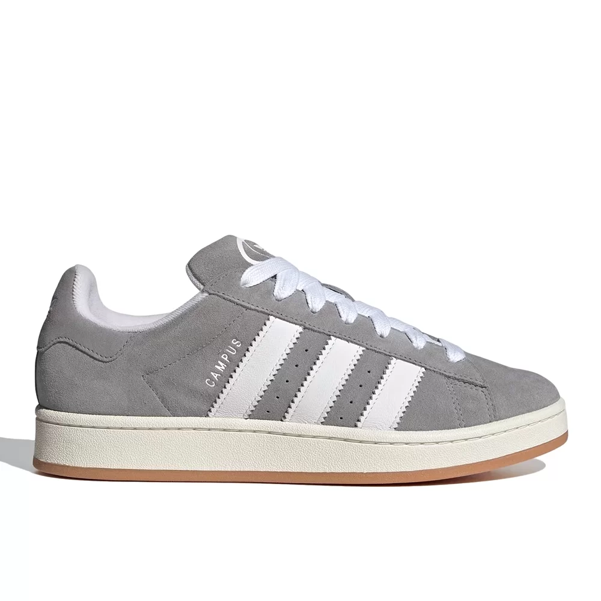

R$600.00
Descrição
Embora eles tenham feito sua estreia em hardwood, os tênis adidas Campus foram rapidamente adotados em quase todos os outros lugares. Com este par, movemos a silhueta icônica em outra direção e adicionamos materiais, cores e proporções modernas. Eles são feitos com um cabedal de couro premium forrado com tecido felpudo macio, com tudo isso montado em uma entressola esbranquiçada - uma conexão clara com o legado do Campus.